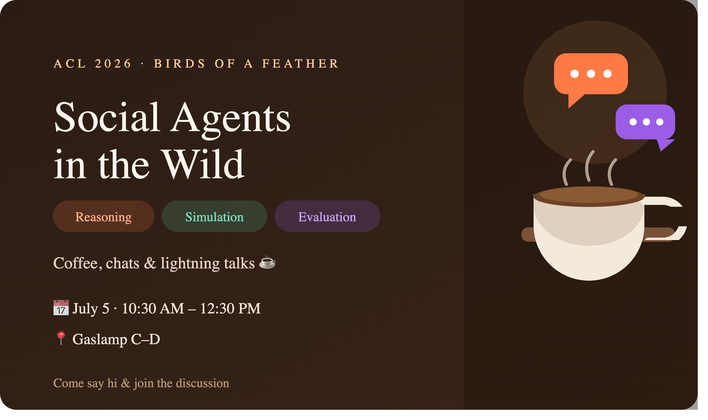

SocialLLM: Large Language Models for Social Reasoning and Simulation
ICWSM 2026 Workshop
Los Angeles, CA, USA · 26 May, 2026 (Half-Day)
USC Information Sciences Institute · Room 1014
Overview
Also Explore Our Upcoming Tutorial →Large Language Models (LLMs) are increasingly used not only as analytic tools, but as socially situated agents that reason, interact, and generate behavior in simulated environments. This shift enables new forms of computational social science, where LLM-driven agents are used to model decision-making, social norms, cooperation, persuasion, and collective dynamics at scale. The SocialLLM workshop invites submissions that explore how LLMs can serve as generative agents to simulate, analyze, and probe social behavior in online and networked contexts. We are particularly interested in work that connects micro-level language interactions to macro-level social phenomena central to ICWSM and computational social science. Beyond technical advances, we encourage contributions that critically examine when LLM-based social simulations are appropriate, what kinds of social processes they can meaningfully capture, and how their outputs should be evaluated and interpreted. The workshop aims to foster a principled, responsible, and empirically grounded research agenda for using LLMs in social reasoning and simulation.
Call for Papers
We welcome empirical, methodological, theoretical, and conceptual submissions. Topics include, but are not limited to:
- Agent-Based Social Simulation with LLMs: Modeling coordination, conflict, polarization, cooperation, collective action, and information diffusion. Multi-agent strategic interaction and emergent collective behavior.
- Emergence, Norm Formation, and Cultural Evolution: Development and evolution of norms, beliefs, narratives, and behaviors. Path dependence, tipping points, and long-term social dynamics.
- Persona Fidelity and Population Heterogeneity: Psychologically plausible and evolving agent personas. Synthetic populations and demographic heterogeneity. Effects of individual-level variation on aggregate outcomes.
- Platform and Network Contexts: Simulating online interaction under realistic exposure and network structures. Feedback loops, incentives, moderation, and governance mechanisms. Platform design and algorithmic mediation.
- Interventions and Counterfactual Social Experiments: “What-if” simulations for policy, governance, and system design. Stress-testing interventions and identifying unintended consequences.
- Grounding, Realism, and Privacy: Empirical grounding and calibration with real-world data. Reproducibility and evaluation frameworks. Privacy-preserving and responsible simulation practices.
- Ethical and Societal Implications: Validity limits of LLM-based social simulations. Misuse risks and dual-use concerns. Applications in sensitive domains (elections, public health, vulnerable communities).
Submission Types
- Long Paper (Archival or Non-Archival): May consist of up to 8 pages of content, plus unlimited pages for references and appendix.
- Short Paper / Poster Papers (Archival or Non-Archival): May consist of up to 4 pages of content, plus unlimited references and appendix.
- Abstract / Demo Papers (Non-Archival): May consist of up to 2 pages of content.
Camera Ready Version
Accepted papers will be given one additional page of content to address reviewers' comments.
Submission Guidelines
Please check the style guidelines of ICWSM 2026. Accepted papers will be published at ICWSM workshop proceedings.
Submission Policies
- The reviewing process will be double-blind.
- At least one author of each accepted paper should register and present their work in person at SocialLLM.
Important Dates
Submissions open on OpenReview.
Note: Submitting authors must have an OpenReview profile. Co-authors are allowed to be added through name and email. New profiles created with an institutional email will be activated automatically. New profiles created without an institutional email will go through a moderation process that can take up to two weeks.
| Submission Deadline | April 1, 2026, 11:59 PM AoE |
| Paper Notification | April 15, 2026, AoE |
| Camera-Ready Deadline | April 30, 2026, AoE |
| Workshop Date | May 26, 2026 (Half-Day Workshop) |
Schedule
| Time | Activity |
|---|---|
| 1:00 PM – 1:10 PM | Opening |
| 1:10 PM – 1:40 PM |
Lightning Talks (6 talks, 5 mins each)
|
| 1:40 PM – 2:20 PM | Keynote Talk 1 (Dr. Maarten Sap) |
| 2:20 PM – 2:40 PM | Coffee Break, Networking, Poster Discussion |
| 2:40 PM – 3:20 PM | Keynote Talk 2 (Dr. Zhijing Jin) |
| 3:20 PM – 4:20 PM |
Oral Session (3 talks, 15 mins + 5 mins Q&A each)
|
| 4:20 PM – 4:50 PM | Research Discussion |
| 4:50 PM – 5:00 PM | Closing Remarks |
Keynote Speakers

Zhijing Jin (she/her) is an Assistant Professor in Computer Science at the University of Toronto, and also a Research Scientist at Max Planck Institute in Germany. She is a faculty member at the Vector Institute, a CIFAR AI Chair, an ELLIS advisor, and faculty affiliate at the Schwartz Reisman Institute in Toronto, CHAI at UC Berkeley, and the Future of Life Institute. She co-chairs the ACL Ethics Committee and the ACL Year-Round Mentorship. Her research focuses on Causal Reasoning with LLMs, and AI Safety in Multi-Agent LLMs. She has received the ELLIS PhD Award, three Rising Star awards, two Best Paper awards at NeurIPS 2024 Workshops, two PhD Fellowships, and a postdoc fellowship. She has authored over 100 papers and her work has been featured in CHIP Magazine, WIRED, and MIT News.
As AI systems take on more autonomous roles across the economy, governance, and daily life, they’ll increasingly interact with each other. However, will the AI agents coordinate for social good, or exploit rival agents and people in ways that put humans at serious risk?
In this talk I will explain how we assess these dangers with large-scale social simulations and game-theoretic analysis. Across thousands of high-stakes scenarios, from arms race escalation to common pool resource depletion, frontier models choose socially beneficial actions in only 62% of cases, with systematic biases in framing and ordering worsening outcomes. Surprisingly, stronger reasoning capabilities often make models more prone to selfish strategies like free-riding, and recent models consistently defect in unmodified social dilemmas regardless of scale or reasoning ability. However, game-theoretic interventions offer a promising path forward: cooperation mechanisms such as mediation, enforceable contracts, and reputation systems improve collective welfare significantly and become more effective under stronger optimization pressures. Beyond formal mechanisms, self-organizing social structures like elected leadership oriented toward group welfare further sustain cooperation in sequential dilemmas. These results suggest that safer multi-agent AI requires principled institutional design rather than reliance on models’ inherent prosociality.
Suggested Reading
- "Cooperate or Collapse: Emergence of Sustainable Cooperation in a Society of LLM Agents" (NeurIPS 2024)
- "Corrupted by Reasoning: Reasoning LLMs Become Free-Riders in Public Goods Games" (COLM 2025)
- "When Ethics and Payoffs Diverge: LLM Agents in Morally Charged Social Dilemmas" (preprint 2025)
- "Agent-to-Agent Theory of Mind: Testing Interlocutor Awareness among LLMs" (EMNLP 2025)
- "GT-HarmBench: Benchmarking AI Safety Risks Through the Lens of Game Theory" (preprint 2026)
- "CoopEval: Benchmarking Cooperation-Sustaining Mechanisms and LLM Agents in Social Dilemmas" (Tewolde*, Zhang* et al., forthcoming 2026)
- "Evaluating Cooperation in LLM Social Groups through Self-Organizing Leadership" (Faulkner et al., forthcoming 2026)

Maarten Sap is an assistant professor in Carnegie Mellon University’s Language Technologies Department (CMU LTI), with a courtesy appointment in the Human-Computer Interaction Institute (HCII). He is also a part-time research scientist and AI safety lead at the Allen Institute for AI. His research focuses on measuring and improving AI systems’ social and interactional intelligence, assessing and combatting social inequality and biases in language, and building narrative language technologies for prosocial outcomes. He has received paper awards at NeurIPS 2025, NAACL 2025, EMNLP 2023, ACL 2023, FAccT 2023, and was named a 2025 Packard Fellow and recipient of the 2025 Okawa Research Award. His work has been covered by the New York Times, Forbes, Fortune, Vox, and more.
Large language models are rapidly becoming a new tool for simulating social worlds—from evaluating conversational agents to modeling collective behavior in artificial societies. But when should we trust these simulations? In this talk, I synthesize lessons from a series of recent projects examining the promises and pitfalls of LLM-based social simulation. First, I highlight key problems with current simulations: interactive evaluations reveal limitations in LLMs’ social reasoning, particularly in settings involving coordination and information asymmetry, while recent studies show a substantial simulation–reality gap, with LLM-based user simulators behaving differently from real humans and inflating agent performance. Second, I discuss emerging methodological solutions, including principles for validating collective behaviors in LLM societies and techniques for building more realistic agents through personality-grounded training and structured social world modeling. Finally, I highlight applications where social simulations remain valuable, including studying interpersonal conflict in sensitive settings and systematically benchmarking the safety of increasingly autonomous AI agents.
Organizers


Assistance

Program Committee Members (Reviewers)
-
(listed in alphabetical order)
- Alexej Proskynitopoulos, Meta
- Andrew Aquilina, University of Pittsburgh
- ChuanHsin Wang, Texas A&M University
- Cong Wang, Texas A&M University
- Dan Le, Google DeepMind
- Ganesh Prasanna Balakrishnan, GumGum
- Haein Kong, Rutgers University
- Jiao Liu, Morgan Stanley
- Krishna Chaitanya Balusu, Meta
- Lei Cao, University of Southern California
- Menghao Huo, Santa Clara University
- Siqi Zhang, Microsoft
- Stephanie Birkelbach, Texas A&M University
- Tai Vu, OpenAI
- Vidya Ganesh, Qualtrics
- Zirui Wei, C3.ai
Accepted Papers
- Oral Auditing Support Strategies in LLMs Through Grounded Multi-Turn Social Simulation
- Lightning Calibrated but Autonomous: Inference-Time Bayesian Logit Correction for LLM Social Simulations
- Oral Deliberation Structure as Social Bias: How Agent Topology Amplifies Intersectional Discrimination in Multi-Agent Credit Decisions
- Lightning Designing Explainable Conversational Agentic Systems for Guarani Speakers
- Lightning Multimodal Large Language Models as Synthetic Participants in Video-Based Studies: An Evaluation
- Lightning Harnessing Digital Data for Outbreak Management: A Generative Agent-Based Policy Formulation and Assessment
- Lightning LLMs with Personalities in Multi-issue Negotiation Games
- Lightning Milking the Metaphors: Cultural Obfuscation in Wellness (COW) around Gomutra on YouTube using LLMs
- Oral Patterns of Persuasion Through the Lens of Theory of Mind: Value Alignment Analysis in Online Deliberation
- Lightning Perceiving Creativity in the Age of AI: How Labels, Beliefs, and Familiarity Shape Evaluations of AI-Generated and Human-Created Art
- Lightning Reconstructing Gender Values from Film: Digital Twins of Fictional Characters as Surveyable Agents
- Lightning SocialPulse: An Open-Source Subreddit Sensemaking Toolkit
Media
Join SocialLLM Slack channel (link updated on 3/24/2026) for updates and discussions.
Contact
For questions, please contact us at SocialLLM Slack channel (preferred) or social.llm.workshop@gmail.com.
SocialAgent: Second Workshop on Large Language Models for Social Reasoning and Simulation
NeurIPS 2026 Workshop
Atlanta, Georgia, USA · December 12 or 13, 2026 (Exact Date TBA)
Overview
Large language models are increasingly used not only as analytic tools, but as socially situated agents that reason, interact, and generate behavior in simulated environments. This shift enables new forms of research on decision-making, social norms, cooperation, persuasion, and collective dynamics at scale.
SocialAgent brings together researchers who build, evaluate, and critically examine LLM-based social agents. The workshop aims to advance a principled, responsible, and empirically grounded research agenda for social reasoning and simulation.
Workshop Themes
- 🧠 Social reasoning & cognition: Theory of mind, moral judgment, and genuine reasoning vs. prompting artifacts.
- 🌐 Social simulation & its validity: LLMs as proxies for individuals and populations, and the validity standards that make simulations trustworthy.
- ⚖️ Pluralistic alignment & evaluation: Contested values, emergent norms, and evaluation beyond task accuracy.
Call for Papers
Submit on OpenReview ↗We welcome empirical, methodological, theoretical, and conceptual submissions. Topics include, but are not limited to:
- Agent-Based Social Simulation with LLMs: Coordination, conflict, cooperation, collective action, and information diffusion.
- Emergence, Norm Formation, and Cultural Evolution: The development of norms, beliefs, narratives, and collective behavior.
- Persona Fidelity and Population Heterogeneity: Psychologically plausible agents, synthetic populations, and demographic variation.
- Platform and Network Contexts: Exposure structures, feedback loops, incentives, moderation, and governance.
- Interventions and Counterfactual Experiments: Simulations for policy, system design, and stress testing.
- Grounding, Realism, and Evaluation: Calibration, reproducibility, privacy, and comparisons with human behavior.
- Ethical and Societal Implications: Validity limits, misuse risks, and responsible applications in sensitive domains.
Submission Types and Guidelines
Submission formats and review policies will be announced.
Important Dates
| Submission Deadline | August 29, 2026, AoE |
| Author Notification | September 29, 2026, AoE |
| Workshop Date | December 11 and December 12, 2026 (Sydney). December 12 and December 13, 2026 (Paris, Atlanta) TBD |
Call for Reviewers
Volunteer to Review ↗We invite researchers working on large language models, social reasoning, agent-based simulation, and related areas to join our reviewer pool.
Schedule
The workshop schedule will be announced.
Keynote Speakers
Keynote speakers will be announced.
Organizers


Accepted Papers
Accepted papers will be posted after the review process.
Media
Join the SocialLLM Slack channel for updates and discussions.
Contact
For questions, contact us through the SocialLLM Slack channel or email social.llm.workshop@gmail.com.